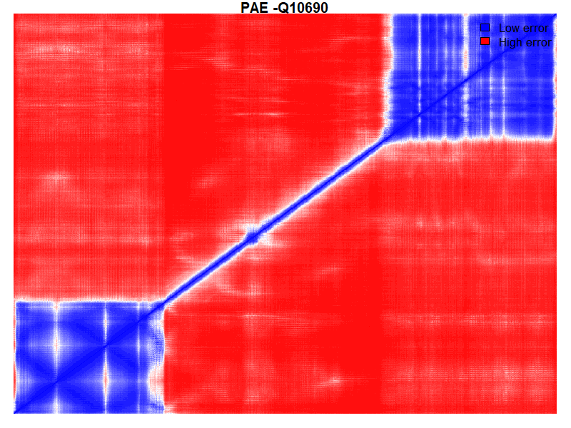

| PAE Mean | PAE Prop Under 5 |
PAE Max | pDLLT Mean | pDLLT Prop Over 90 |
pDLLT Prop Over 70 |
|---|---|---|---|---|---|
| 24.6 | 11.9% | 32 | 68.6 | 39.9% | 17.3% |
| Score type | Solvent Accessibility Agreement |
C-beta Interaction Potential |
All-Atom Interaction Potential |
Secondary Structure Agreement |
Torsion Angle Potential |
|---|---|---|---|---|---|
| Normalised | 0.5 | 0 | 0 | 0.6 | 0.3 |
| Z-Score | -2.2 | -0.5 | 0.6 | 0.1 | -5.5 |
| Average Local Quality Score |
Average Local Quality Score Error |
|---|---|
| 0.5 | 0.1 |
| Score type | QMEAN4 | QMEAN6 |
|---|---|---|
| Normalised | 0.5 | 0.5 |
| Z-Score | -6.7 | -5.4 |
| Chain | Wildtype | Residue | Mutation | QMEAN |
|---|---|---|---|---|
| A | K | 35 | E | 0.53 |
| A | T | 183 | A | 0.34 |
| A | P | 376 | L | 0.23 |
| A | P | 638 | R | 0.75 |